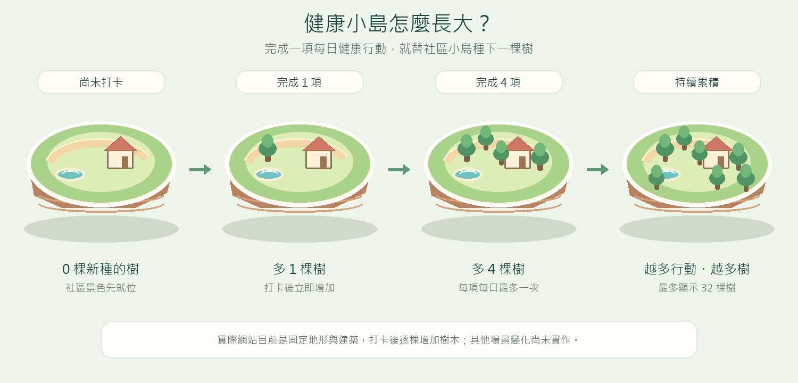

🧩
回應生活中的困難
以六座主題島嶼補充原有四條探索路線，並用日常情境題拆解名詞，讓民眾循序理解，不必先懂醫療術語。
CKM 涵蓋心血管、腎臟與代謝健康，資訊彼此相關，初次接觸時不容易知道從哪裡開始。本作品把學習、行動與可信資源放在同一座小島上。
以六座主題島嶼補充原有四條探索路線，並用日常情境題拆解名詞，讓民眾循序理解，不必先懂醫療術語。
每次完成一件小事就種下一棵樹。漏打卡不扣成果，鼓勵使用者依自身狀況持續探索。
打卡紀錄只存在使用者目前的瀏覽器，不收集或上傳健康資料；答題用於一般衛教，不作診斷。
這次改成一座連得起來的生活島：有市場、步道、診所、住家和社區廣場。點地圖上的地標登島，完成任務後再把成果帶回健康護照。
護照只記錄學習進度與你主動確認的行動，不是醫療風險評分。資料留在這台裝置的瀏覽器。
選目標只會標示「進行中」。實際完成後再按確認，才會列入完成紀錄。
不建議輸入可識別身分或敏感醫療資料。更換瀏覽器／裝置可能無法同步；重設角色只清除暱稱與目標；XP、徽章、日誌及任務紀錄保留。
從六島總覽選擇「登島探索」。開始任務後才會顯示進行中；完成需由你主動確認。
七種練習以虛構情境／數值呈現。回答後先看解說，再由你確認完成學習任務；任何結果都不會診斷疾病、推算正式 CKM 分期或替代醫療諮詢。
完成一題後會看到答案理由與來源。開始遊戲會記為「進行中」；全部題目完成並按確認後，才會發給護照經驗值。
CKM 是心血管（Cardiovascular）、腎臟（Kidney）與代謝（Metabolic）的縮寫。這三個系統會互相影響，因此健康管理常需要把多項資訊放在一起理解。
心臟與血管負責把血液送到全身。血壓、血脂、血糖和吸菸等因素，都可能影響心血管風險。
腎臟協助過濾血液、調節水分與電解質，也參與血壓調節。腎功能變化可能與心血管和代謝風險交織。
代謝涉及身體如何使用與儲存能量。血糖、血脂、體重及腰圍等資訊可提供不同面向的線索。
高血壓、糖尿病、血脂異常和腎臟病可能同時出現，也可能在早期沒有明顯感覺。整體評估要結合病史、檢查與專業判讀。
重點在維持健康習慣與預防。
可能包含體重／腰圍相關風險或糖尿病前期。
可能包含高血壓、血脂異常、第二型糖尿病或慢性腎臟病。
可能包含無症狀的亞臨床心血管疾病；特定高風險慢性腎臟病或醫師評估的高風險也可能符合。須由醫療人員依檢查與病史判讀。
包括已確診冠心病、心衰竭、心房顫動、中風或周邊動脈疾病等；須依完整 CKM 風險由醫療人員評估。
每一項檢查回答的問題不同。帶著報告與過往紀錄詢問醫療團隊，比單看網路上的單一數字更有幫助。
反映測量當下血液對血管壁的壓力。讀值會受測量姿勢、休息狀態、時間與環境影響，需依建議正確測量並看多次紀錄。
空腹血糖與糖化血色素（HbA1c）反映不同時間尺度的血糖資訊。是否異常及後續安排需依檢查條件與病史判讀。
血脂報告常包含總膽固醇、LDL、HDL 與三酸甘油酯。適合的目標會依個人整體心血管風險而不同。
由血液檢驗等資料估算腎臟過濾功能。需看趨勢與其他檢查；單次數值不宜自行解讀成診斷。
檢查尿液中白蛋白的線索，可與 eGFR 一起協助評估腎臟健康。兩項資訊能互補，不是互相取代。
提供體位與腹部脂肪分布的部分資訊；BMI 不能單獨代表整體健康，也不應用來羞辱或評價個人。
每個任務約 1–5 分鐘。先學一個觀念，再選一個做得到的行動；完成與否都不評分。
把常見食物和國民健康署「我的餐盤」食物類別配對。分類是認識食物的練習，不是好壞排名。
小提醒：地瓜、南瓜、玉米等也屬於全穀雜糧類；不同食物提供的營養不完全相同。
先完成你選的行動，再按記錄；分類答題本身不會增加打卡。
兩個示意食品每份份量相同。練習比較營養標示上的鈉含量。
每份鈉 340 毫克
每份鈉 520 毫克
哪一份的鈉含量較少？
這是虛構數字的閱讀練習，不代表商品推薦或個人攝取目標。比較時要先看每份量、每包份數與實際吃下的份量。
選一種符合你目前能力的活動和時間。走路、家務、輪椅移動或坐姿活動都可以是開始。
WHO 指出任何活動都比完全不動好；一般成人參考量為每週 150–300 分鐘中等強度活動。這是群體指引，不是每個人的起步要求。若有不適或活動限制，請依醫療建議調整。
不必一次做到滿分。先選一個容易執行、符合自身健康狀況的方向；有慢性病或特殊飲食／活動限制時，先和醫療團隊討論。
讓餐點有不同種類的蔬菜、豆類或其他原型食物；若需限鉀、限水或調整蛋白質，遵循個人化營養建議。
走路、家務、騎車或伸展都可成為開始。WHO 對成人的一般建議為每週 150–300 分鐘中等強度活動；能力與疾病狀況不同，適合的量也不同。
不吸菸、避免二手菸，建立規律睡眠節奏。若睡眠、情緒或戒菸遇到困難，可詢問醫療團隊與社區資源。
依醫療人員建議安排量測與檢查，帶上紀錄回診；用藥有疑問先詢問，不自行停藥或換藥。
如果不確定怎麼問，從一個最在意的問題開始即可。醫療團隊可以依你的個人狀況調整說明。
詢問哪些數值需要持續追蹤、什麼時候複檢，以及哪些生活或用藥因素會影響讀值。
詢問目前是否適合檢查 eGFR 或尿白蛋白，以及結果應搭配哪些資訊解讀。
詢問每種藥物的用途、常見注意事項、漏服時如何處理；不要自行停藥或調整劑量。
請醫療團隊依你的日常、疾病與能力，協助選擇可負擔、可持續的一小步。
完成今天的健康行動，就能讓島上長出植物。連續照顧自己，小島會逐漸變得更茂盛。
下圖完整呈現尚未打卡到持續累積的四個階段；實際行動後，請看下方「我的小島」更新。

🌳 一棵樹代表一次健康打卡；小島呈現的是行動累積，不是健康分數。
挑選你今天能做到的行動。每完成一項，就在小島種下一棵樹（同一項每日只計一次）。
今天的一餐加入蔬菜，留意份量與食物多樣性。
依自己的能力散步、伸展或安排活動時間。
今天看一次食品標示，或少用一些沾醬。
睡前留一段安靜時間，建立規律作息。
此展示版以瀏覽器本機儲存打卡資料；不會上傳健康數據。若清除瀏覽器資料或更換裝置，紀錄可能消失。
不知道從哪裡開始？依照你現在最想了解的主題前進。每個入口都有簡介、互動題與延伸資源。
心血管、腎臟與代謝彼此連動。健康評估不應只看單一數字，而要理解整體風險。
血壓、血糖、血脂、eGFR 與尿白蛋白等資訊各有意義，需結合個人狀況由專業人員解讀。
不必一次改變全部生活。選擇一項可持續的小行動，逐步建立適合自己的習慣。
選擇探索主題，回答生活情境題。答題後會看到解說，幫助你理解背後的健康概念。
依照你的需求找到下一站。若有異常檢查或疾病問題，請由醫療團隊協助解讀與安排。